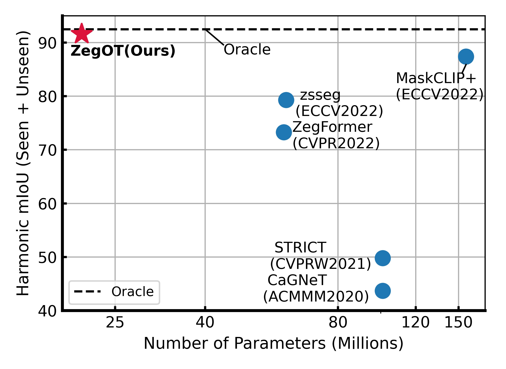

Visual Effects
Harmonic mean IoU of various zero-shot semantic segmentation methods over the number of learnable parameters on PASCAL VOC dataset. Black dashed line indicates the fully supervised learning result of ours.

Recent success of large-scale Contrastive Language-Image Pre-training (CLIP) has led to great promise in zero-shot semantic segmentation by transferring image-text aligned knowledge to pixel-level classification. However, existing methods usually require an additional image encoder or retraining/tuning the CLIP module. Here, we present a cost-effective strategy using text-prompt learning that keeps the entire CLIP module frozen while fully leveraging its rich information. Specifically, we propose a novel Zero-shot segmentation with Optimal Transport (ZegOT) method that matches multiple text prompts with frozen image embeddings through optimal transport, which allows each text prompt to efficiently focus on specific semantic attributes. Additionally, we propose Deep Local Feature Alignment (DLFA) that deeply aligns the text prompts with intermediate local feature of the frozen image encoder layers, which significantly boosts the zero-shot segmentation performance. Through extensive experiments on benchmark datasets, we show that our method achieves the state-of-the-art (SOTA) performance with only ×7 lighter parameters compared to previous SOTA approaches.
Harmonic mean IoU of various zero-shot semantic segmentation methods over the number of learnable parameters on PASCAL VOC dataset. Black dashed line indicates the fully supervised learning result of ours.
A schematic diagram of Multi Prompt Optimal Transport (MPOT) solvers including Shallow and Deep variants.
Harmonic mean IoU of various zero-shot semantic segmentation methods over the number of learnable parameters on PASCAL VOC dataset. Black dashed line indicates the fully supervised learning result of ours.
A schematic diagram of Multi Prompt Optimal Transport (MPOT) solvers including Shallow and Deep variants.
@article{park2021nerfies,
author = {Park, Keunhong and Sinha, Utkarsh and Barron, Jonathan T. and Bouaziz, Sofien and Goldman, Dan B and Seitz, Steven M. and Martin-Brualla, Ricardo},
title = {Nerfies: Deformable Neural Radiance Fields},
journal = {ICCV},
year = {2021},
}